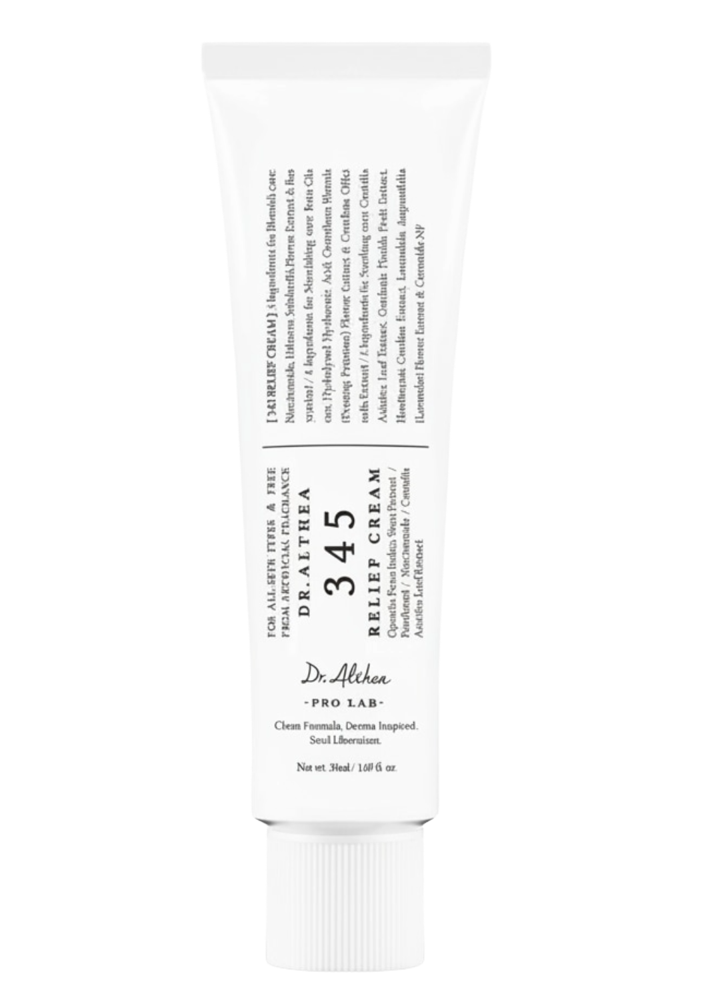
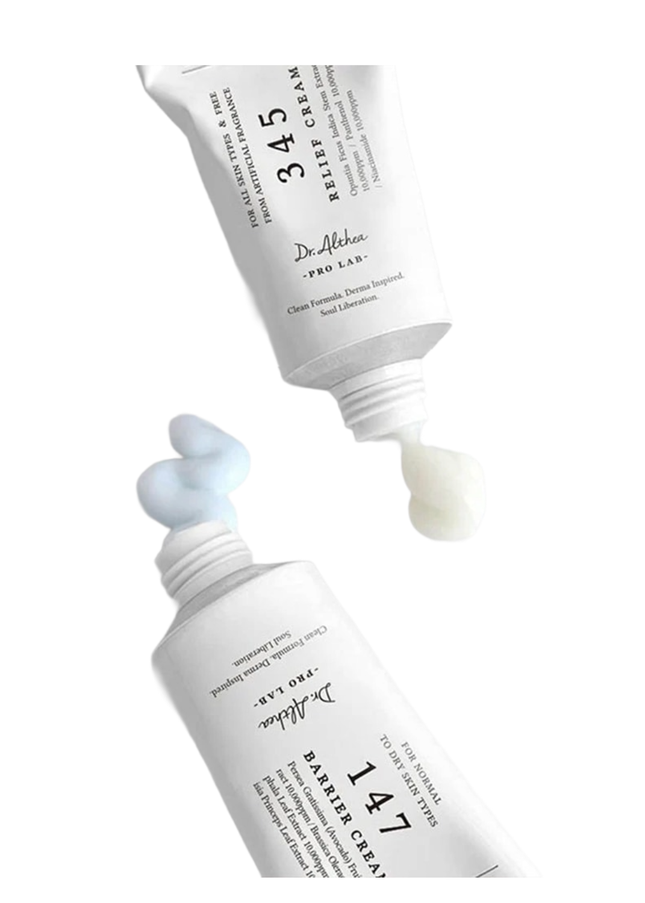

Dr. Althea
La 345 Relief Cream de Dr. Althea est une crème réparatrice de référence pour les peaux sensibles, réactives, sujettes aux rougeurs ou fragilisées par des soins actifs (post-rétinol, post-acide, post-laser). Son nom fait référence à sa formulation clinique à trois complexes actifs : les céramides pour renforcer la barrière cutanée, le niacinamide pour calmer et unifier, et le panthénol (B5) pour hydrater en profondeur et réparer les tissus cutanés abîmés. Texture crème riche mais légère, non grasse, parfaite pour les soins de nuit et comme base de jour pour les peaux desséchées par l'hiver ou les traitements médicaux.
Partout au Maroc
Importé directement de Corée
La 345 Relief Cream de Dr. Althea est une crème réparatrice de référence pour les peaux sensibles, réactives, sujettes aux rougeurs ou fragilisées par des soins actifs (post-rétinol, post-acide, post-laser). Son nom fait référence à sa formulation clinique à trois complexes actifs : les céramides pour renforcer la barrière cutanée, le niacinamide pour calmer et unifier, et le panthénol (B5) pour hydrater en profondeur et réparer les tissus cutanés abîmés. Texture crème riche mais légère, non grasse, parfaite pour les soins de nuit et comme base de jour pour les peaux desséchées par l'hiver ou les traitements médicaux.
Appliquer une quantité adaptée comme dernière étape de la routine skincare. Masser délicatement jusqu’à absorption complète.
Centella Asiatica, Panthénol, Céramides, Niacinamide, Extraits botaniques apaisants.